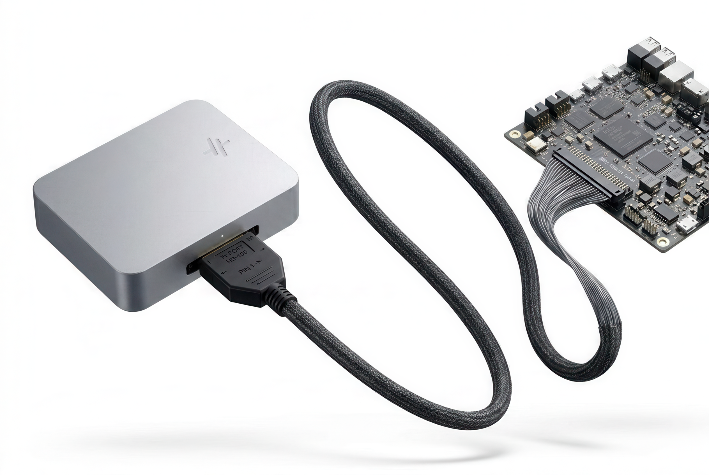

Hardware development, on autopilot.
Automate your electronics bring-up, validation, and firmware development. Connect Tracer to your hardware, and let Hilstart write firmware, run validation tests, and debug while you sleep.
Agent driven, human verifiable.
Design context is converted to a specification and strict test limits that you approve. Our agent writes hardware tests for board bring-up, firmware development, or design validation. Once approved, Tracer runs tests autonomously, on real hardware.
- 01 · Context
Single source of truth.
Inferred from your design files, confirmed by you.
Hilstart reads the schematic, layout, netlist, BoM, I/O summary and your requirements into one specification. Once approved, this context becomes the source of truth for everything downstream, setting the constraints for hardware interaction.
- Agent
- reads and drafts
- You
- edit and approve
- 02 · Test plan
Generate hardware tests.
Hand over a requirements document, an existing test plan, or simply ask for bring-up. Our agent writes out automated hardware tests accordingly, grounded in the specification and board context.
Read them, change a threshold, delete what you don't want. Tests remain in the project for future runs, and can even be triggered during a CI process on a firmware change.
- Agent
- writes the files
- You
- read, edit, approve
- 03 · Execution and results
Run tests on real hardware.
Reading is always allowed: scopes, logic analyzers, meters, etc. Anything that drives an output needs approval in the test plan. Tracer drives its own channels alongside the USB and networked instruments you already own.
Each report links the exact test scripts that produced it. Reports push into your tracker over the API, tied to the test file and the firmware build.
- Agent
- runs the plan and reports
- You
- monitor, or walk away
![A failed enable check in run #0007 of a motor-driver stall bench test, with every finding openable to the record behind it. The EN/FLT net reads 0.02 volts at TP9 against the 3.9 volts expected from the schematic and datasheet, a delta of minus 3.9 volts, and the evidence is 3 records with a link to open the check in detail. The board view can be read as a schematic, a waveform, telemetry or a run log. Two candidates are ranked, R1 missing or the wrong value as likely and U2 pin 13 soldered low as possible, with the full reasoning available. Three recommended steps are shown out of seven, each naming the condition that leads to the next: measure R1 in place with an ohmmeter across its pads powered down, reflow U2 only if R1 measured good, then re-run the test so the bench re-verifies it. Three of six previous runs are listed, all passing the same test near 3.9 volts. The expected value is approved against motor-driver revision B, one of fourteen specifications.](images/app-triage.svg)
The hardware interface.
Flexible and powerful hardware test equipment supporting timing-critical execution, with no setup required.
- Analog input
- 8 channels4×0–5 V · 4×0–24 V
- Analog output
- 4 channels2×0–5 V · 2×0–24 V
- Power
- 0–48 V at 3 APlus fixed 5 V and 3V3, both 3 A · per-rail current limit · V and I telemetry at 1 kHz · one USB-C connection powers the whole system
- Digital I/O
- 10 bidirectional GPIO1V8 / 3V3 / 5 V selectable in software · on timer channels for PWM
- Isolated I/O
- 2 in, 2 outOpto-isolated inputs · galvanically isolated SSR outputs at 2 A
- Buses
- CAN FD or ClassicalCAN FD at 5 Mbit/s · on-board transceiver, termination switched in software · SPI, I²C and UART at selectable voltage
ProtectionOn every external pin:
- ESD
- Overcurrent
- Overvoltage
- Negative voltage
Run it in our cloud, or from your own environment.
Both reach the same hardware layer, with the same capabilities. Use whichever one fits how you already work.
Everything in the browser.
Bring your own design files, or link to a repo. The environment is already set up, the agent can drive the bench, write & flash firmware, and bring up boards - all in your browser.
Your editor, your agent, your build.
Reach the same hardware from your own machine over an API. Probe a net, enable a rail, author and run a test, pull earlier runs.
Either wayHardware is read-only by default; actuation asks for your grant. Everything durable lives against the board, versioned. Every report is written back against the test file and the firmware build that produced it.
Will this work for my setup?
What do I need to get started?
What board data can I upload?
How can I trust AI to control a power supply?
Can the same test run again later?
How much supervision does it need?
How does Tracer connect to my board?
What external instruments can I connect?
What are the real-time guarantees?
What about production-line tests?
Close the loop on your hardware.
We're working with a small group of teams putting Tracer into real board bring-up and validation workflows. If your agents write firmware while your engineers still babysit the bench, we should talk.